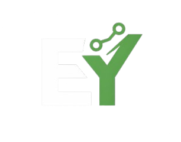

Karabük Üniversitesi’nde Bilgisayar Mühendisliği öğrencisiyim. Yazılım geliştirme alanında kendimi sürekli geliştiren bir Junior Developer olarak özellikle front-end, back-end ve oyun geliştirme konularına ilgi duyuyorum. Yeni teknolojileri öğrenmeyi, projeler üretmeyi ve edindiğim bilgileri gerçek uygulamalara dönüştürmeyi seviyorum. Amacım, hem bireysel hem de ekip çalışmalarında deneyim kazanarak yazılım dünyasında sağlam bir kariyer inşa etmek.
İlkokuldan itibaren teknolojiye ilgim vardı ve yazılıma ilk adımımı HTML öğrenerek attım. Kısa bir ara vermiş olsam da, web geliştirmenin ne kadar keyifli bir alan olduğunu fark ettim.
Lise dönemimde hedefim Bilgisayar Mühendisliği okumaktı ve yazılım dünyasının ne kadar geniş olduğunu gördükçe bu alana olan ilgim daha da arttı. Şu anda Karabük Üniversitesi’nde Bilgisayar Mühendisliği öğrencisi olarak kendimi geliştirmeye devam ediyorum.
Üniversite eğitimim boyunca yazılım alanında kendimi geliştirmeye odaklandım. İlk olarak C programlama diliyle temel programlama mantığını öğrendim. Ardından Java ile nesne yönelimli programlama becerilerimi geliştirdim. Web geliştirme tarafında ise HTML, CSS ve JavaScript öğrenerek modern arayüzler tasarlamaya başladım. Son olarak PHP ile back-end tarafına da adım atarak projelerimi daha kapsamlı hale getirmeyi hedefledim.
Üniversite sürecimde öğrendiklerimi projelerle pekiştirmeye çalıştım. Java ile temel bir alışveriş sepeti uygulaması geliştirerek OOP mantığını kavradım. Ayrıca C# ve Unity kullanarak basit oyun projeleri yaptım. Web tarafında ise HTML, CSS ve JavaScript ile bu portfolyo sitesini hazırlayarak hem tasarım hem de responsive yapı konusunda deneyim kazandım.
HTML, CSS ve JavaScript ile modern ve responsive web arayüzleri geliştiriyorum. Projelerimin kaynak kodlarını karta tıklayarak GitHub üzerinden inceleyebilirsiniz.
C# ve Unity kullanarak temel oyun mekanikleri ve küçük projeler geliştiriyorum. Oyun çalışmalarımın detayları karta tıklayarak GitHub profilimde yer alıyor.
Okulda PHP ve veritabanı temelleri üzerine çalışıyorum. Backend tarafında kendimi geliştirerek ilerleyen süreçte projeler üretmeyi hedefliyorum. Yeni çalışmalarımı GitHub hesabımda paylaşacağım.
Mobil uygulama geliştirme alanına ilgi duyuyorum ve bu konuda kendimi geliştirmeyi hedefliyorum. İlerleyen süreçte projelerimi GitHub üzerinden paylaşacağım.